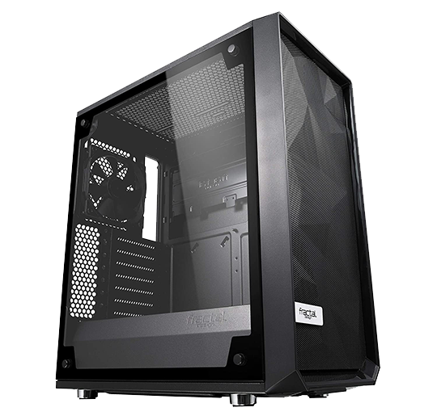

NOTWENDIGKEITEN
Dies sind die notwendigen Teile Ihres PCs.
Sie übertragen Ihre Eingaben auf die Kernteile Ihres PCs
Sie übertragen die Ausgabe Ihres PCs in die Welt
Das Gesicht
Der Begriff "Monitor" wird häufig synonym mit "Computerbildschirm" oder "Anzeige" verwendet.
Der Monitor zeigt die Benutzeroberfläche des Computers an und öffnet Programme, sodass der Benutzer mit dem Computer interagieren kann, normalerweise über Tastatur und Maus.
Mit Grafikkarte verbunden
PRO TIPP: Während einer schlechten Spielsitzung. Schlag es nicht.
Die linke Hand
Wie der Name schon sagt, ist eine Tastatur im Grunde eine Tastatur.
Neben der Maus ist die Tastatur eines der primären Eingabegeräte, die mit einem Computer verwendet werden.
Das Design der Tastatur stammt von den originalen Schreibmaschinentastaturen, bei denen Buchstaben und Zahlen so angeordnet waren, dass die Schreibleisten beim schnellen Tippen nicht blockiert wurden.
Dieses Tastaturlayout wird als QWERTZ-Design bezeichnet, das seinen Namen von den ersten sechs Buchstaben in der oberen linken Ecke der Tastatur erhält.
PRO TIPP: Reinigen Sie monatlich die Unterseite Ihrer Tastatur von den festsitzenden Snacks
Die meisten funktionell funktionierenden Tastaturen und Mäuse einer vertrauenswürdigen Marke funktionieren einwandfrei
Wenn Sie jedoch Empfehlungen für Gaming-Tastatur und -Maus wünschen, lesen Sie diese COOLES ZEUG
Die rechte Hand
Während die meisten Menschen nicht möchten, dass eine Maus in ihrem Haus herumläuft, haben sie normalerweise kein Problem damit, eine Maus an ihrem Computer sitzen zu sehen.
Dies liegt daran, dass die Maus neben der Tastatur eines der primären Eingabegeräte ist, die in heutigen Computern verwendet werden.
Der Name kommt von der kleinen Form der Maus, die Sie auf dem Mauspad schnell hin und her bewegen können, und der Schnur, die den Schwanz der Maus darstellt.
Wenn Sie eine drahtlose Maus verwenden, funktioniert die Analogie natürlich nicht so gut.
PRO TIPP: Verwenden Sie ein Mauspad
Die Stimme
Speaker
Lautsprecher sind eines der am häufigsten verwendeten Ausgabegeräte für Computersysteme.
Einige Lautsprecher sind speziell für die Verwendung mit Computern konzipiert, während andere an jede Art von Soundsystem angeschlossen werden können.
Unabhängig von ihrem Design besteht der Zweck von Lautsprechern darin, eine Audioausgabe zu erzeugen, die vom Hörer gehört werden kann.
PRO TIPP: Gut für allgemeine Zwecke und um Ihre Dominanz zu behaupten
Headphones
Kopfhörer sind kleine Lautsprecher, die in oder um Ihre Ohren getragen werden können.
Herkömmliche Kopfhörer haben zwei Ohrmuscheln, die mit einem Band über Ihrem Kopf befestigt sind.
Kleinere Kopfhörer, oft als Ohrhörer oder Ohrhörer bezeichnet, befinden sich im äußeren Teil Ihres Gehörgangs.
PRO TIPP: Gut für die Privatsphäre und das Eintauchen in Videospiele.
Sie können für den gleichen Zweck und für die Mobilität auch Kopfhörer / Ohrhörer auswählen
but usually the sound quality is lesser
Die Tasche
Fast alle PCs verfügen über eine interne Festplatte.
Dieses Laufwerk speichert das Betriebssystem, Programme und andere Dateien des Computers.
Für die meisten Benutzer bietet die interne Festplatte genügend Speicherplatz, um alle Programme und Dateien zu speichern.
Wenn jedoch die interne Festplatte voll wird oder der Benutzer die Daten auf der internen Festplatte sichern möchte, kann eine externe Festplatte hilfreich sein.
PRO TIPP: Lassen Sie Ihren internen Speicher in Ruhe.
Die Muschel
Der Schutz Ihrer Kernteile.
Beachten Sie die Bedeutung des Luftstroms, damit Ihr PC nicht überhitzt.
Nehmen Sie die Wichtigkeit der Größe, damit Ihre Teile alle innen passen.
| High-End | Mid-End | Low-End + Power Supply |
|---|---|---|

|
 |

|